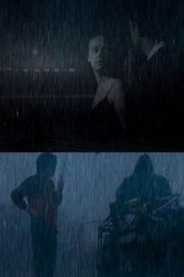

Also known as:Sem Titulo #4: Apesar dos Pesares, na Chuva há de Cantares (original title)
Country:United States, 27 minutes
Spoken languages:English
Genres:Documentary
Director(s):Carlos Adriano
Writer(s):
Video Codec:Unknown
Number: 4660

Certification:
Storyline:
It rains; but still, it sings. Under the symbolic motto of the meteorological metaphor, a poetic constellation of edited "found footage" with excerpts of 99 films and 8 versions of a song. From the series "Notes for a Self-Biopic (in Regress)".
Cast:
Medium: Media file,
Location: D:\Personal\Sarah Disk\Documents\Curse\Minecraft\Install\assets\virtual\legacy\sound\ambient\weather\rain4.ogg
Loaned: No
Aspect ratio: Unknown